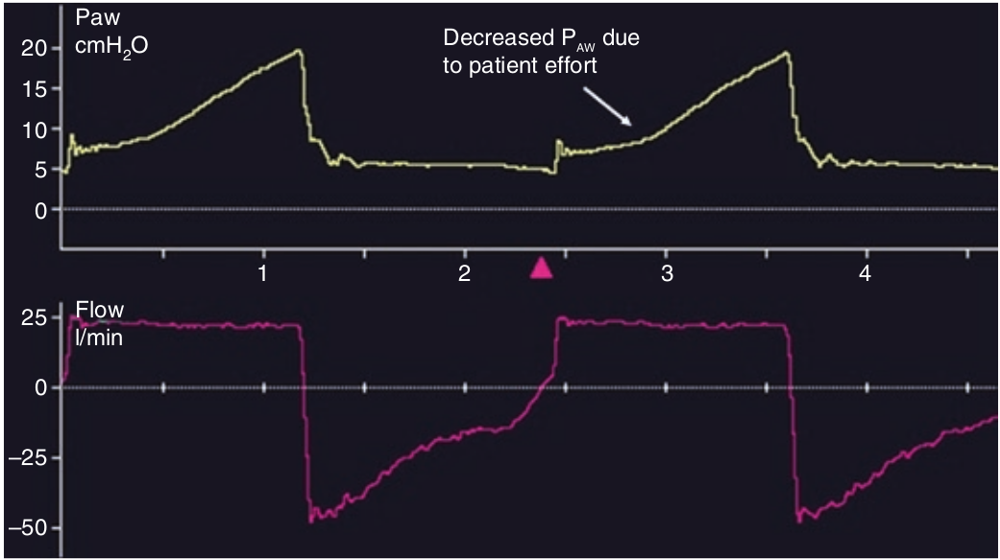

در حمایت کنترل فشاری، منحنی شدت جریان توسط ونتیلاتور کنترل میشود. برای قضاوت در مورد کفایت شدت جریان از منحنی فشار استفاده میکنیم. هرگونه تلاش دمی سبب میشود که در مسیر صعودی فشار، انحراف ایجاد گردد (تقعر بسوی بالا). در اینجا کاهش فشار میانگین دمی بیانگر این نکته است که سهم ونتیلاتور از کار تنفس کمتر شده است و ونتیلاتور کار کمتری بر روی بیمار انجام میدهد، یعنی کار تنفس کمتر حمایت میشود. تحت بدتریم شرایط اگر شدت جریانی مه بیمار دریافت میکند کمتر از وقتی باشد که به ونتیلاتور وصل نباشد، در این صورت فشار راه هوائی از خط پایه کمتر میشود و بیمار به معنای واقعی کلمه در حال انجام کار زیاد است در حالی که به ونتیلاتور وصل است. این وضعیت را محرومیت شدت جریان نام نهاده اند.

در حمایت کنترل فشاری:
۱ - محرومیت شدت جریان با حجم جاری بیشتری همراه است
۲ - هر چه تلاش دمی بیشتر باشد، فشار متوسط راه هوائی بیشتر است
۳ - هر فشار متوسط راه هوائی کمتر باشد، حمایت ونتیلاتور کمتر است
۴ - محرومیت شدت جریان بصورت تغییر شکل منحنی شدت جریان معلوم میشود
۵ - محرومیت شدت جریان وقتی است که فشار از PEEP کمتر شود